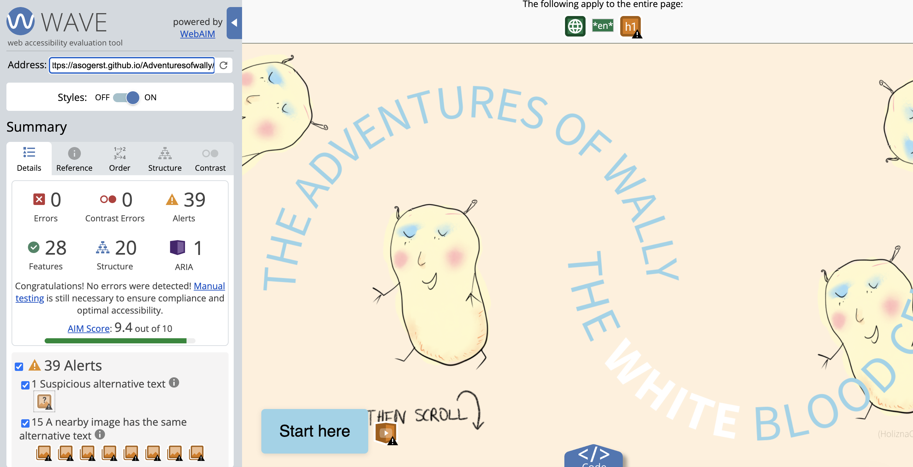

I designed the digital story The Adventures of Wally the White Blood Cell (SC4-LIV-01: Identify the role of the digestive, circulatory, respiratory and excretory systems of humans, and name the major organs) using a combination of Adobe Fresco to draw the images and the free code publishing platform GitHub. Drawing my own images gave me creative freedom and allowed me to achieve the aesthetic I was after without breaching any copyright infringements and I preferred the platform GitHub over Adobe Express, as it gave me more freedom for the layout and special effects, such as sound and voice-over transcripts (Oddone, 2020). The Adventures of Wally provides inclusion across all three Universal Design for Learning (UDL) dimensions (CAST, 2024). It gives students choice and autonomy in the way they access the story, embedding multiple means of engagement. Students can choose to read the story in a linear way or jump back and forth through provided hyperlinks, strengthening the learners’ agency (Miller, 2019). Through various supports, the digital story further aligns with multiple means of representation. For example, text decoding is scaffolded through voice-over narration; the story is multimodal through the use of images, sound and text and vocabulary is clarified through a glossary, easily accessible through hyperlinks. On the level of multiple means of action and expression, students can choose their own navigation on the website; the quiz at the end can be conducted individually or as a group and the narration of the text is made accessible through voice-over audio, alt text descriptions and high contrast to be inclusive for a range of learners with disabilities (Figure 1).
